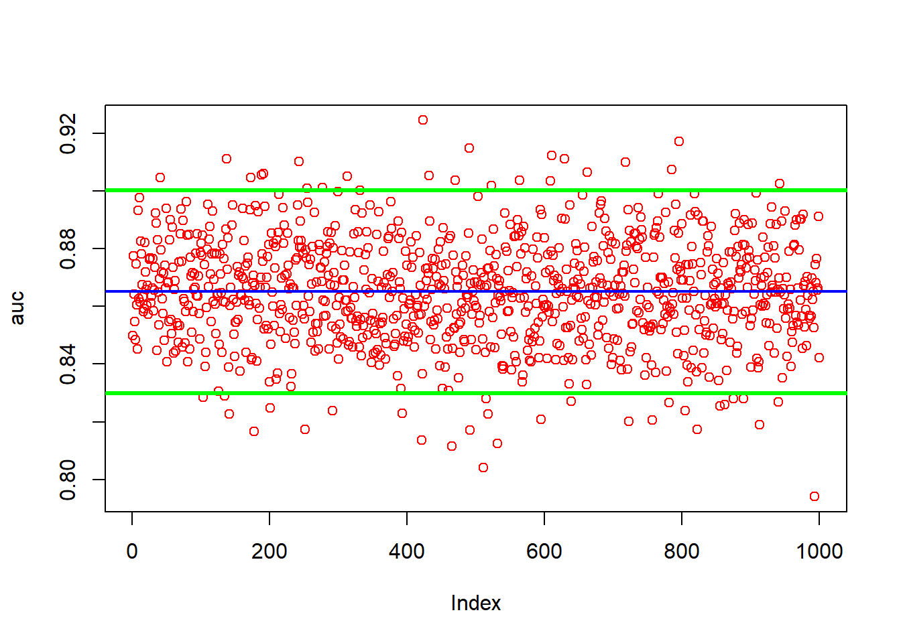

Download the Data
library(readr)
train_titanic <- read_csv("train.csv")## Rows: 891 Columns: 12
## ── Column specification ───────────────────────────────────────────────────────
## Delimiter: ","
## chr (5): Name, Sex, Ticket, Cabin, Embarked
## dbl (7): PassengerId, Survived, Pclass, Age, SibSp, Parch, Fare
##
## ℹ Use `spec()` to retrieve the full column specification for this data.
## ℹ Specify the column types or set `show_col_types = FALSE` to quiet this message.The columns i will use are y, Pclass, Sex, Age, SibSp, Parch, Fare, Emarked as they are the easiest to work with. other possibilities include using the tiltes for names
library(dplyr)
selected_cols <- c("Survived", "Pclass", "Sex", "Age", "SibSp", "Parch", "Fare", "Embarked")
data <- train_titanic[selected_cols]
data <- data %>% rename(y = Survived)convert the characters to factors. convert our y variable to numeric for XGBoosting
char_cols <- sapply(data, is.character)
data[, char_cols] <- lapply(data[, char_cols], factor)
data$y <- as.numeric(data$y)we have NAs we need to deal with
colSums(is.na(data))## y Pclass Sex Age SibSp Parch Fare Embarked
## 0 0 0 177 0 0 0 2Firsts i am going to predict the NAs for Age with a simple Random Forest model.
na_index <- which(is.na(data$Age))#index the missing NAs
na_data <- data[na_index, ]#create a data frame of the NAs indexed
c_data <-data[-na_index, ]#take the complete data to c_data
na_data <- na_data[, -which(names(data) == "Age")] # take out the collum that only has NAs in iti will use na.roughfix() for the two missing Embarked values
library(randomForest)
c_data <- na.roughfix(c_data)# there are two NAs in embarked
na_data <- na.roughfix(na_data)Predict our NAs
library(randomForest)
model_rf <- randomForest(Age ~.,
ntree = 1200,
data = c_data)
pred_na <- predict(model_rf, na_data)This binds our predictions to the corrosponding index number for each missing NA in “data”
na_n_ind <- cbind(pred_na, na_index)
data$Age[na_n_ind[, 2]] <- na_n_ind[, 1]finally just use na.roughfix() for the two embarked values since it is so little
library(randomForest)
data <- na.roughfix(data)
colSums(is.na(data))## y Pclass Sex Age SibSp Parch Fare Embarked
## 0 0 0 0 0 0 0 0str(data)## tibble [891 × 8] (S3: tbl_df/tbl/data.frame)
## $ y : num [1:891] 0 1 1 1 0 0 0 0 1 1 ...
## $ Pclass : num [1:891] 3 1 3 1 3 3 1 3 3 2 ...
## $ Sex : Factor w/ 2 levels "female","male": 2 1 1 1 2 2 2 2 1 1 ...
## $ Age : num [1:891] 22 38 26 35 35 ...
## $ SibSp : num [1:891] 1 1 0 1 0 0 0 3 0 1 ...
## $ Parch : num [1:891] 0 0 0 0 0 0 0 1 2 0 ...
## $ Fare : num [1:891] 7.25 71.28 7.92 53.1 8.05 ...
## $ Embarked: Factor w/ 3 levels "C","Q","S": 3 1 3 3 3 2 3 3 3 1 ...This sets a wide grid
size <- c(2:6)
decay <- c(seq(0.01, 0.25, 0.01))
maxit <- c(seq(100, 1500, 50))
grid <- expand.grid(size, decay, maxit)library(ROCR)
library(nnet)
n <- 50 # number of times we run the algorithm
s <- 500 # how many samples we take for the random grid/ to be validated
v <- 10 # how many times we run each hyper parameter then take the mean of. for validation
AUC <- c()
# store out best values via validation scores
opt <- matrix(0, nrow = n, ncol = 5)
colnames(opt) <- c("size", "decay", "maxit", "AUC_val", "AUC_TEST")
for (j in 1:n){
# put aside data for final test. creat md and test
ind1 <- sample(nrow(data), nrow(data)*0.8, replace = FALSE)
md <- data[ind1, ]
test <- data[-ind1, ]
# make our random grid
ind <- sample(nrow(grid), s , replace = FALSE)
rgrid <- grid[ind, ]
auc_runs <- c()
for (i in 1:nrow(rgrid)){
#cat("loops: ", j, i, "\r")
auc_tuning <- c()
for (p in 1:v){
# bootstrap from md to make a train and val set
idx <- unique(sample(nrow(md), nrow(md), replace = TRUE))
train <- md[idx,]
val <- md[-idx, ]
# model on the train data
model <- nnet(y ~ .,
data = train,
trace = FALSE,
act.fct = "logistic",
size = rgrid[i, 1],
decay = rgrid[i, 2],
maxit = rgrid[i, 3]
)
# predict on the val data
phat <- predict(model, val)
# find the auc
pred_rocr <- prediction(phat, val$y)
auc_ROCR <- performance(pred_rocr, measure = "auc")
auc_tuning[p] <- auc_ROCR@y.values[[1]]
}
auc_runs[i] <- mean(auc_tuning) #take the mean of v runs for that one specific hyper parameter
}
# index the best hyper parameters
BI <- which.max(auc_runs)
best_AUC <- auc_runs[BI]
best_params <- rgrid[BI, ]
# store the best hyper parames based on the mean aucs
opt[j, 1] <- best_params[1, 1]
opt[j, 2] <- best_params[1, 2]
opt[j, 3] <- best_params[1, 3]
opt[j, 4] <- best_AUC
# model with the md data
model <- nnet(y ~ .,
data = md,
trace = FALSE,
act.fct = "logistic",
size = opt[j, 1],
decay = opt[j, 2],
maxit = opt[j, 3]
)
# predict the set aside test set
phat_t <- predict(model, test)
# get the test auc
pred_rocr <- prediction(phat_t, test$y)
auc_ROCR <- performance(pred_rocr, measure = "auc")
auc_test <- auc_ROCR@y.values[[1]]
# store the test auc
opt[j, 5] <- auc_test
}index the best x percent of test aucs and there hyperparameters. we will store them in win
th <- quantile(opt[ ,5], probs = 0.50)
ind_opt <- which(opt[ ,5] >= th)
win <- opt[ind_opt, ]
win## size decay maxit AUC_val AUC_TEST
## [1,] 6 0.22 950 0.8779571 0.8738268
## [2,] 6 0.07 1100 0.8806940 0.8741388
## [3,] 3 0.04 550 0.8711150 0.8879892
## [4,] 3 0.17 200 0.8719684 0.8929487
## [5,] 4 0.09 1100 0.8755925 0.8923718
## [6,] 4 0.11 550 0.8775980 0.8744972
## [7,] 5 0.17 150 0.8842549 0.8762389
## [8,] 5 0.08 1350 0.8714630 0.9010334
## [9,] 5 0.24 1250 0.8817058 0.8686430
## [10,] 4 0.17 1100 0.8820751 0.8893443
## [11,] 6 0.15 300 0.8805495 0.8786775
## [12,] 6 0.10 1100 0.8654288 0.9204575
## [13,] 5 0.13 1200 0.8745061 0.8754358
## [14,] 5 0.19 250 0.8791122 0.8688073
## [15,] 5 0.14 1350 0.8718739 0.8814229
## [16,] 6 0.25 150 0.8712955 0.9055258
## [17,] 5 0.11 500 0.8763618 0.8710859
## [18,] 6 0.17 1500 0.8798742 0.8810892
## [19,] 4 0.09 650 0.8789933 0.8752306
## [20,] 6 0.14 250 0.8779028 0.8716733
## [21,] 4 0.15 1000 0.8760848 0.8780647
## [22,] 3 0.02 200 0.8849975 0.8686441
## [23,] 6 0.23 700 0.8706899 0.9012519
## [24,] 4 0.08 100 0.8843795 0.8850281
## [25,] 6 0.15 850 0.8740920 0.8746088This code is using bootstrapping and runs the best hyperparamters that we picked before. it tests the selected hyper parameters n times. since we are not tuning in it we can use all of the data in it.
library(nnet)
library(ROCR)
n <- 400
w <- nrow(win)
#collums are hyper param set
bs_results <- matrix(0, nrow = n, ncol = w)
for (i in 1:n) {
for (j in 1:w){
auc <- c()
#cat("loops: ", i, j, "\r")
# Initial Split
ind <- unique(sample(nrow(data), nrow(data), replace = TRUE))
md <- data[ind, ]
test <- data[-ind, ]
# build the model on model data
model <- nnet(y ~ .,
data = md,
trace = FALSE,
act.fct = "logistic",
size = win[j, 1],
decay = win[j, 2],
maxit = win[j, 3]
)
# Predicting on the test set
phat <- predict(model, test)
# Calculating the AUC
pred_rocr <- prediction(phat, test$y)
auc_ROCR <- performance(pred_rocr, measure = "auc")
auc <- auc_ROCR@y.values[[1]]
# matrix with n rows and w collums. each collum is a hyper parameter
bs_results[i, j] <- auc
}
}This code takes the colmeans of the matrix that gave our results. then we bind these results onto the win matrix for presentation. it also takes the index of the best run from before and saves the correlating hyperparameters into bh.
bh_ind <- which.max(colMeans(bs_results))
bh <- win[bh_ind, ]
mean(bs_results[,bh_ind])## [1] 0.8678928cm <- as.vector(colMeans(bs_results))
win <- cbind(win, av_ovr_n_runs=cm)
bh## size decay maxit AUC_val AUC_TEST
## 6.0000000 0.1000000 1100.0000000 0.8654288 0.9204575This is the final run. it uses bootstrapping and runs n times. This is mostly to do a final proof and present the auc
library(gbm)
library(ROCR)
n <- 1000
auc <- c()
for(i in 1:n){
#cat("loops: ", i, "\r")
# bootstrapping
ind <- unique(sample(nrow(data), nrow(data), replace = TRUE))
md <- data[ind, ]
test <- data[-ind, ]
#
model <- nnet(y ~ .,
data = md,
trace = FALSE,
act.fct = "logistic",
size = bh[1],
decay = bh[2],
maxit = bh[3]
)
# Predicting on the test set
phat <- predict(model, test)
# Calculating the AUC
pred_rocr <- prediction(phat, test$y)
auc_ROCR <- performance(pred_rocr, measure = "auc")
auc[i] <- auc_ROCR@y.values[[1]]
}
mean(auc)## [1] 0.8664228sd(auc)## [1] 0.01820334# plot auc and 95% CI
plot(auc, col="red")
abline(a = mean(auc), b = 0, col = "blue", lwd = 2)
abline(a = mean(auc)-1.96*sd(auc), b = 0, col = "green", lwd = 3)
abline(a = mean(auc)+1.96*sd(auc), b = 0, col = "green", lwd = 3)